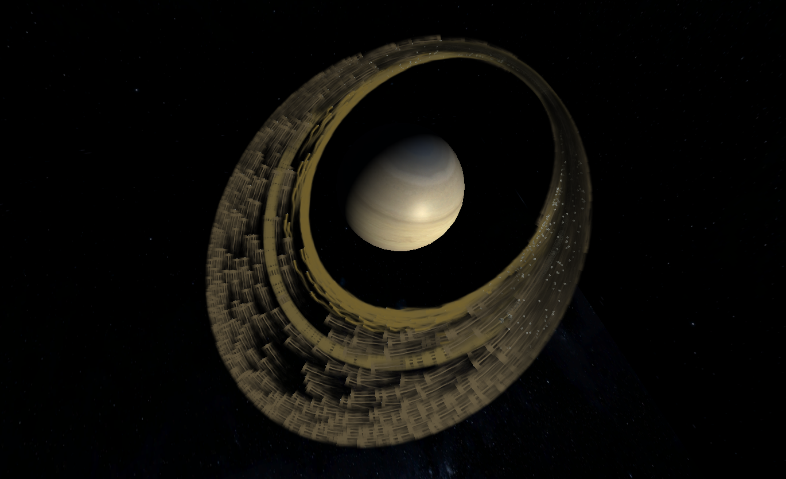
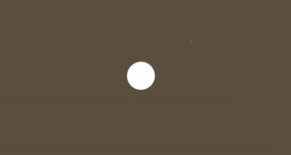
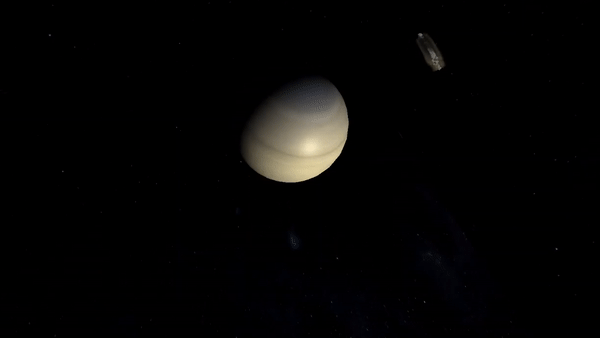
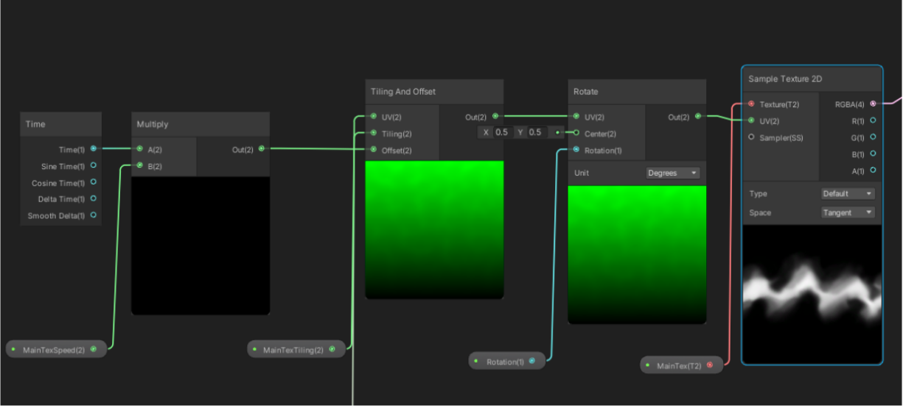
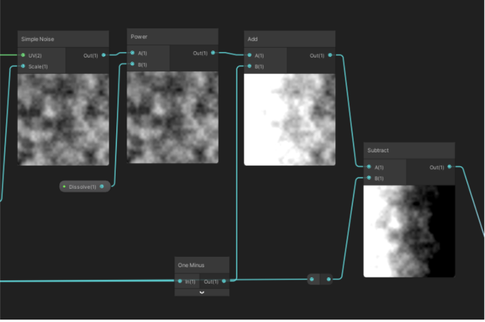

|

|
|

|
|
|
To explore our interest in astrophysics and cosmology, we decided to simulate the planetary ring formation of Saturn, which has the well-known most beautiful and intensive ring in the solar system. We chose Unity as our starting point and platform, on which we modeled the interaction between meteorite particles and Saturn under the influence of its gravitational field. Throughout the project, we modeled the physics based on factual data and scaled down to fit into Unity’s simulation scene, engineered a space partitioning algorithm to efficiently calculate pairwise forces between particles, and customized the shader and texture to create a realistic multi-layer Saturn ring.
1) The actual Saturn ring formation process is both physically complex and not well studied. We need to extract a simple enough physics model while keeping as close to known facts as possible. Refer to the physics section on our simplified model solution.
2) During the simulation, the pairwise gravitational force between every particle needs to be calculated. A naive approach is far from sufficient in simulating large amounts of particles. Refer to the N-body simulation section on our algorithmic approach.
3) The real Saturn ring consists of different layers of different particles with gaps in between, a challenging result both physically and visually to reproduce. Refer to the texture and shading section on our aesthetical approach.
|

|

|
We referenced REBOUND (See reference 1) in computing the gravitational acceleration caused on each particle. The formula is:
$$a_{ij} = \sum_{j=0}^{N_{active}-1}\frac{Gm_{j}}{(r_{ij}^{2}+b^{2})^{3/2}}\hat{r_{ij}}$$
We defaulted b to 0 according to the paper. We also replicated the following known data:
G: 6.67 x 10-11 m3kg-1s-2 Saturn Radius: 5x107m Saturn Mass: 5.683x1026kg Saturn Ring radius: 7x107m Velocity of particle on outer edge of ring: 1.64x104m/s
And made the following assumptions:
Particle radius: 106m Particle mass: 1018kg
We scaled the units for length, mass, and time to successfully fit in Unity’s scene. We also applied a tangential initial velocity and a random offset velocity in order to simulate the formation of a circular ring of multiple layers.
Inspired by the Octree structure discussed in REBOUND, we developed a space partitioning algorithm to increase runtime efficiency. For each frame, we perform the following calculations: First, we divide the 3-dimensional space uniformly into cubes and hash them. Each hash key has a corresponding linked list. Second, we distribute each particle into a cube based on its transform. We store the pointer to the particle in the corresponding linked list. Third, for each particle, for the particle’s own cube, we loop over all particles within and calculate the pairwise gravitational force. For cubes within a certain distance of the target particle, we used each cube’s center of mass to calculate the gravitational force influence of that cube. For cubes that are too far away, we chose to ignore it because the gravitational force has a factor of 1/(r^2).
This optimization decreased the runtime from to O(N * (P+ Q)), where P represents the average number of particles per cube and Q represents the number of neighboring cubes we decided to calculate. This optimization allows us to support over 2500 particles while the naive algorithm supports only less than 200. We can tune P and Q to achieve the most optimal visual and physical effect. In the end, we decided P to be 27 and Q to be 8.
Our approach is different from the paper we referenced, whose Octree algorithm partitions space recursively to cubes of gradient size and considers the gravitational forces from all of the cubes. Our particle is constantly moving, so building this octree every frame is a significant overhead we are concerned about. Moreover, since cubes that are too far away generate very little gravitational force, calculating every single one was simply not worth it for us. Therefore, the space partition algorithm we adopted utilizes a linear structure instead of a tree structure.
We applied textures and shadings for Saturn, meteorite, and sky box. Everything is rendered under Universal Render Pipeline/Lit shader. Lit is a very commonly used shader. It allows users to render real-world surfaces in photo-realistic quality.
At the beginning of the project and even in the middle, we have been using the built-in shader which works pretty well. At a later stage, when we tried to make the trail of the meteorite with Universal Pipeline, we found that the URP shader was not compatible with the built-in shader. All the materials we made before turned into pink if we switch to the URP shader. So the only solution is to unify all materials with the URP shader.
To create the layered effect of Saturn's ring, we customized different trail effects for different particles, depending on thie distance from Saturn. The first step of creating the trail effect is to create the gradient which is the color of the trail. Here we used 2 colors to make the final effect more beautiful and give our trails more adjustability. The second step is to give speed and time to the texture which we drew by hand with Krita, and also add some rotation to make our texture move. The last step is to add the disappearing and dissolving effects by using Simple Noise node and subtracting it from texture.
|

|

|
1) Unity's first attempt, including writing C# script, using Pipeline and building simple models and scenes.
2) The formation process of Saturn's rings, including physical phenomena, physical formulas, and mathematical calculations.
3) Researching different algorithms and realizing the algorithm from theory to practice in Unity.
Below shows our final results seen from two different perspectives. Notice the gradual formation of different layers of Saturn's ring!
|
|
|
Zhenhang mainly focused on Saturn’s texture and ring layers’ rendering. He also built the skybox and trail.
Jeffery mainly focused on researching different n body simulation algorithms and coded the final spatial partitioning algorithm used.
Kay worked on the physical modeling of Saturn’s gravitational field and collaborated with Jeffery to develop the space partition optimization algorithm. She also helped with Saturn’s texture and ring layers’ rendering.
N-body Simulation: https://www.aanda.org/articles/aa/pdf/2012/01/aa18085-11.pdf
Texture images: www.solarsystemscope.com
Saturn Ring formation: https://en.wikipedia.org/wiki/Rings_of_Saturn
Algorithm Implementation:https://stackoverflow.com/questions/4324703/should-an-octree-be-rebuilt-every-frame